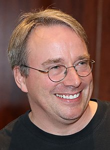

Linus Torvalds
The Creator of Linux

A photograph of Linus Torvalds
Biography
Linus Torvalds is a Finnish-American software engineer who is the creator and principal developer of the Linux kernel, which is the kernel for a number of operating systems. He also created the version control system Git. Torvalds was born on December28, 1969 in Helsinki, Finland. He studied computer science at the University of Helsinki, and he developed the Linux kernel as a student project in 1991. Since then, the linux kernel has become one of the most widely used kernels in the world, powering everything from smartphones to supercomputers.
Achievements
- 1991-Created the Linux kernel and the version control system Git
- 2004-Named one of the "100 Most Influential People in the World" by Time magazine in 2004
- 2010-Received an honorary doctorate from the University of Helsinki in 2010
- 2010-Received the 2010 Millennium Technology Prize and the 2012 Free Software Foundation's Award for the Advancement of Free Software
- 2013-Inducted into the Internet Hall of Fame in 2013 for his contribution to the developement of the Linux kernel and the creation of Git
- 2014-Inducted into the Internet hall of Fame of Computer History Museum in 2014
- 2015-Received the 2015 IEEE Computer Society Computer Pioneer Award
- 2019-Received the 2019 ACM SIGOPS Hall of Fame Award
- 2021-Awarded the Tekeda Foundation's 3032 Takeda Award
for Social Contribution, which recognizes individuals who have made significant contributions to society through technology
- 2021-Received the 2021 IEEE masaru Ibuka Consumer Wlectronics Award, which recognizes individuals who have made significant contributions to the field of Consumer electronics "One of the most Influential people in the world."
-- Time Magazine The Famous People Resources
Learn more about Linus Torvalds and his work:
Wikipidia page on Linus Torvalds
Linus Torvald's personal website
The Linux Kernel Archives